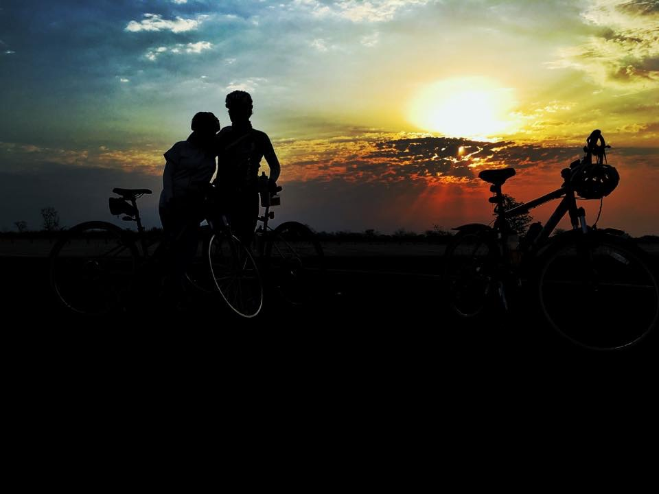
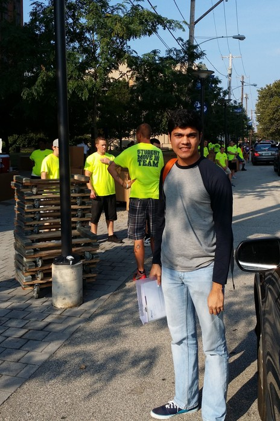
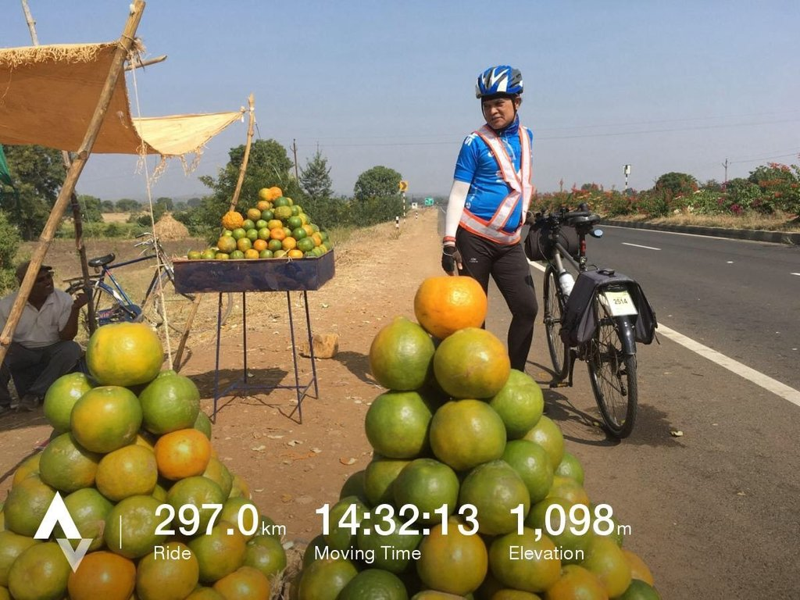
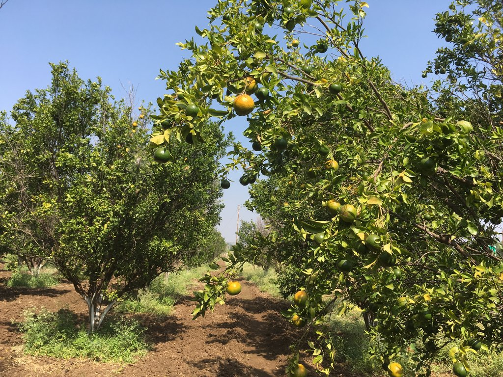
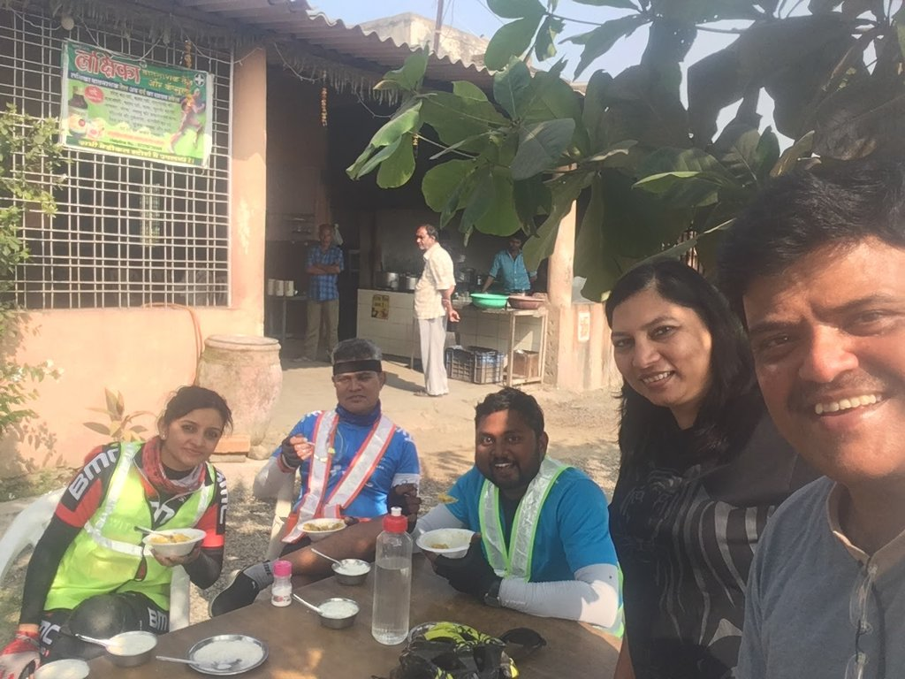
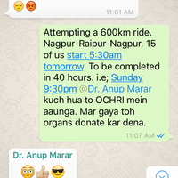
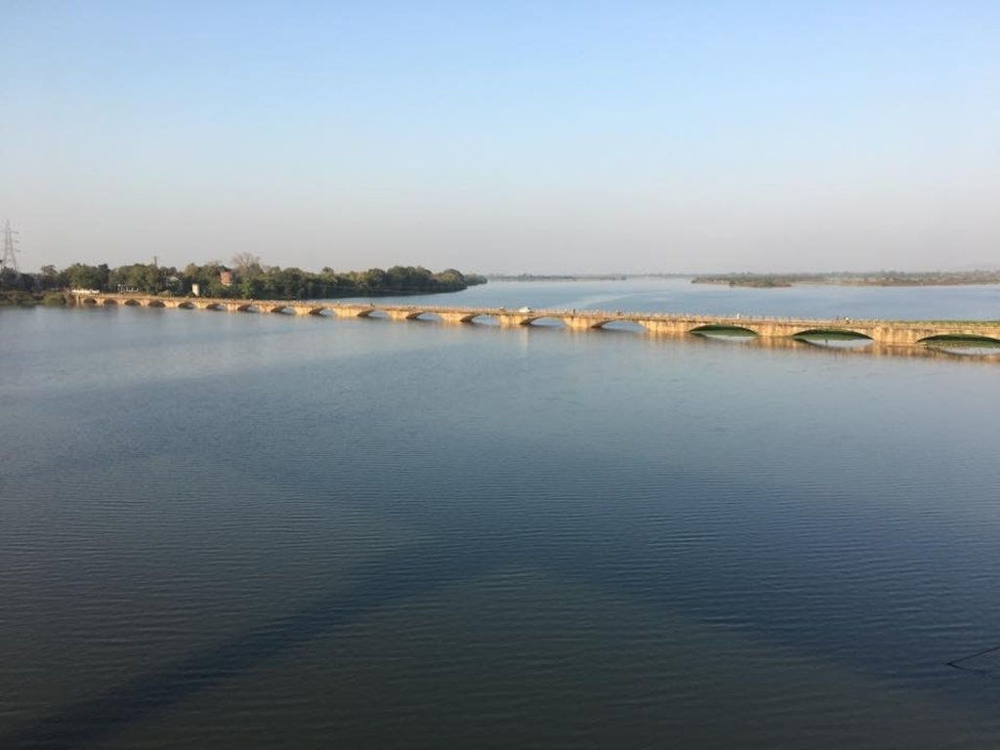
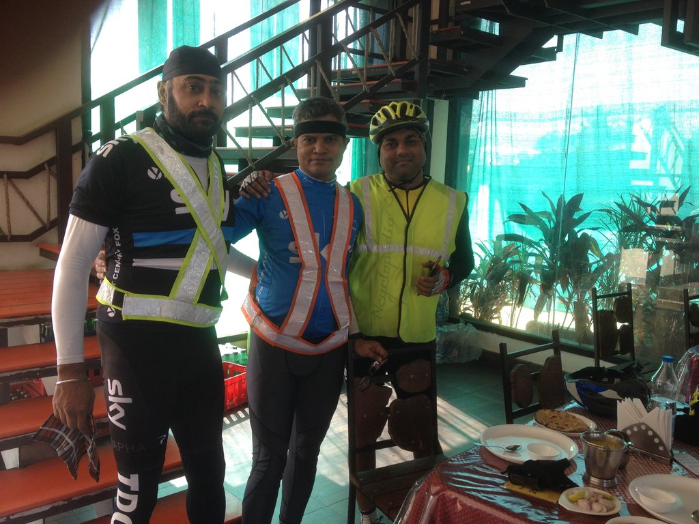
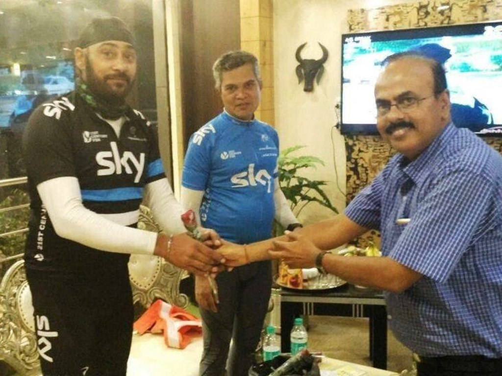
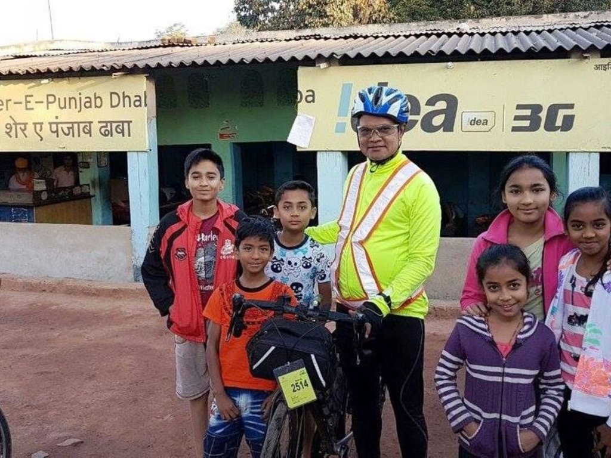

Having decided to ditch WordPress as the CMS on my site and use a static site generator, I started my search for one. General reading on the web seemed to all point at Jekyll, I did not like the fact that the content format in Jekyll was mostly fixed. I explored many other systems Hexo, Hugo, Pelican, Hyde, Brunch, Middleman, Harp, Expose, …
A couple of them were in PHP as well and thus tempting, but all of them proved to be rather inflexible and not what I was looking for. Then I remembered Kushal Das used something for his blog. I asked him and he pointed out to a script that he used, but more importantly, he mentioned Lektor.
Why Lektor...
What caught my attention was that Lektor was written by the author of Flask, a Python micro-framework which I love.
The installation was super simple, and I had the quickstart running in minutes. What stood out immediately was that Lektor had an admin interface which opened in the browser and second the build system was incremental and ran as soon as I saved anything in the admin.
Lektor is not a fixed format CMS, but it is more of a framework. From the introduction to Lektor - "You can model your own blog posts and render them with the templates you want to use. There is not a single built-in template that you have to use. The only thing it gives you is a quickstart that sets up the folders and copies default minimalistic templates over."
The transition
I now wanted something which could import WordPress posts into Lektor. Unable to find any such plugin I hacked my own WordPress to Lektor export plugin. The plugin works pretty well, and I could export 1200 posts from my old blog to Lektor. Unfortunately, it turns out that Lektor does not scale well as of now. So I dropped the idea of converting the whole of the old site to Lektor and started afresh. A new design and a new set of functionality.
As I kept creating templates for this site, I kept incorporating more and more features. The complete code for this website is available on GitHub. The generated content is also tracked in a separate Git repo. As of now I have not actually set up a deployment pipeline but will do in due course. For comments I use Disqus, the search is Google Site Search.
The old content was converted to static files using the Simply Static Wordpress plugin. Before turning WordPress to static pages, I switched to Disqus comments and Google Site Search so that visitors do not loose out on these essential functionalities.
Pediatrician and a Forensic Expert. A passionate PHP geek. Currently CTO, SANIsoft. Also a cyclist, photographer, bird watcher, nature lover and a FOSS enthusiast.
When I switched to WordPress it was out of necessity, I had been keeping a journal for a few years on Live Journal and with the demise of that platform I needed a place to continue keeping those journal entries online. I also needed a place to write new stuff. This domain at the time was hosting just my photography on an instance of Coppermine Photo Gallery, a project I was leading at that point.
WordPress was still in its infancy, it was immensely hackable. Matt was a struggling hacker, and the software was written in PHP. These were reasons enough to start tinkering with WordPress. Additionally, WordPress allowed import of LiveJournal entries. I quickly put together my own theme. Wrote a few plugin and things were smooth...
Why I still code?
Let me digress a bit here. The shortest answer to this would be because I really really love to code. Coding was one of my earliest hobbies. Coding involves several other things I like, a bit of writing, a bit of Math, lot of exploration and problem solving. Since most of what I code is scratching a personal itch and open sourced, there is a sense of satisfaction of having created something useful for myself and possibly someone else. This website, at least, to begin with, was just an extension of my need to code.
Why bye bye WordPress?
Well, things were almost smooth but not really. There were updates and then security updates and then plugin updates. The Wordpress core started to become very popular, more powerful and in turn more complex. As it stands, WordPress is the most flexible and feature rich CMS that PHP has to offer.
The complexity meant that the easy hackability of Wordpress got lost. Without being able to tinker with tweaking stuff around the website, things became boring. I mostly stopped writing. However lately keeping WordPress has become expensive.
The popularity has come at a price. Wordpress has become the prime target of script kiddies and crackers from across the world. Every website on the Internet is vulnerable to hackers to some degree; however, having a custom website would mean that a hacker would need to target your site specifically. The difference with a WordPress based website is that the cracker can target millions of websites at once, without knowing or caring who they belong to.
When you start out you, firmly feel that your Wordpress install is impregnable! You update the core regularly, you keep all the plugins updated and things run. Till the time they don't. The first time my site got hacked I was almost in disbelief. I then realized that one of the plugins which had a vulnerability had not been updated by the author. Hey! They give it away for free, don't they? No sweat! I restored a clean copy and installed a security plugin. The plugin scan was taking too many resources. I switched till I found one which suited me. I noticed that the site was attracting too much traffic. It was quickly proven to be malicious bot traffic. After several months it happened again, this time, I outsourced the cleanup and put the site behind a proxy, the so-called website firewall. I, however, did not like the idea. This was a simple personal site. It should not cost this much money and time and headaches. I started looking at alternatives. First I looked at other CMSes, then at static site generators. Static site generators appealed a lot to the hacker me. What I chose ultimately and why is written in a separate post
What this does not mean!
This does not mean that I will never use WordPress for any site. I would still continue to use WordPress on all sites which require a dynamic CMS. Sites which need content to be updated by non tech people and most of my client sites which need a CMS...
Pediatrician and a Forensic Expert. A passionate PHP geek. Currently CTO, SANIsoft. Also a cyclist, photographer, bird watcher, nature lover and a FOSS enthusiast.
tldr; Long rides will bring it on. With understanding and effort, it can be avoided.
Every rider experiences some amount numbness in hand sometime or the other. This is specially brought on when the rider is tired on a long ride. Recently during a 400km brevet in Nagpur some complained about it and blamed it on bad roads, it needs to be understood that bad roads are just one facet of it.
Why and what of hand numbness.
To understand why hand numbness occurs we have to look into what causes numbness. In this case compression of nerve cause the numbness. There are two nerves which can be affected in this case. The ulnar nerve that runs from the bottom of your wrist and to your pinky and ring finger, or the median nerve that runs from the middle of your wrist on to your thumb, index finger, middle finger and ring finger.
The diagram above clearly illustrates which nerve is pinched in the two most common positions on a drop handle (mistakenly called roadie) bikes. The ulnar nerve is more commonly pinched as hands are more often on the drops or on the hoods compressing the ulnar nerve.
What can be done to prevent numbness of hands?
Hand and wrist positioning:
See if your wrist and hand are positioned in line with your forearm. If your wrist is bent, it will pinch the nerve, and cause numbness in your hands. If after adjusting your position, you find that you are still unable to get your forearms, wrists and hands flush then it is time to look at your bike fit.
Bike fit:
Is there too much pressure on your hands? Check the angle of your seat with a spirit level. Broadly, your saddle angle should be between 0% to -3%. If it is more than -3% the body tends to slip forward resulting in too much of your body weight being supported by your hands which can cause them to go numb.
Many over enthusiastic riders to become more "aero" set their handle reach to be too far. Correct reach can be determined by asking a friend to watch you spin on a trainer or while riding. When your hands are on the handle hoods, your elbows should be slightly bent, and your arms should be at an almost right angle to your torso.
Another test to determine you are not putting too much pressure on your arms is to see if you can hold the posture you are in while on your hoods without toppling forward or arching your back once you leave your hands. Note: This can make you fall, and should be done with expert assistance and on a trainer.
Having a strong core is also necessary to keep the body balanced on the bike and not put too much pressure on your hands. Remember your hands are for steering your cycle and are not meant to be legs of a tripod.
Gloves:
Gloves not only give a better grip on the handle, but well-padded gloves can distribute pressure on the hands and prevent numbness. Ensure that the gloves fit you properly and are neither too tight nor too loose.
Handlebar Tape and Gels:
I use to see tapes and gels as a cosmetic accessory, but as my cycling distances grew, I realised that good handlebar tape has been underestimated in the comfort of a ride.
The tapes are designed to reduce the amount of vibration your hands feel when riding, reduced vibrations translate to your hands not getting numb. Not just have comfortably padded handlebars but change them as they wear out.
Stretching and flexing:
Lastly, all said and done the best way to get pressure off from the hands is to get your hands off the handle! If you are old like me, ensure that you flex your fingers before and after you put on your gloves. Twirl the wrists till they are supple. Give hands rest while cycling by changing the grip and position on the handlebar as often as needed.
In conclusion, it can be said that if you are sensitive towards your body needs, sensible with your riding style and bicycle numb hands can be easily tackled.
Pediatrician and a Forensic Expert. A passionate PHP geek. Currently CTO, SANIsoft. Also a cyclist, photographer, bird watcher, nature lover and a FOSS enthusiast.
Isn't that supposed to feel and be special? Well, it does not. It does not even feel different from last year or before that or one even before before that!
What did I do in last one year that I feel is special for me? I started to cycle. I have never been one to do any sort of consistent physical activity. In the past decade, I have managed to keep up a somewhat healthy routine and mother nature has been kind to me. Doing any sort of "ultra" activity was just not my thing, but I did manage to start cycling. When I had begun, I had aimed to be able to do a 200km brevet before my 50th birthday. I achieved that goal within 90 days. I quickly moved further ahead and completed a 300 km brevet. This encouraged me to upscale my target, and I wanted to attempt being a Super Randonneur, that entails doing 200, 300, 400, and 600 km brevet in a single season. This was not to be for various reasons. One of them being a recent affliction of Sciatica. I will try to do it in the upcoming season.
What has changed?
A 30 year old me would have been bitterly disappointed at not becoming a super randonneur, at 50 I say that I will try in my 51st year to do that. Perspective on things has changed, I am not in a competition. I realise, I never was in a competition, and no one ever is. It is a journey. Failures are lessons, no one other than you feels that it is shameful. Now I don't either. Failures are opportunities to refactor. This in turn allows me to truly appreciate and feel happy about the successes of people around me.
A 30 year old me would be disappointed to know that at 50 I still "work" and wish continue to work till I can. A 30 year old me would be incredulous at my saying money rapidly becomes irrelevant to happiness. A 30 year old me would be in disbelief if I admitted to being in a depression and then coming out of it after some hard work. A 30 year old me would be in a panic if I said I still have bitter fights with Swati. It's not so bad, just shows we are still individuals. A 30 year old me would not understand why I am so forgiving and empathic.
A 30 year old me would be proud of me as a husband, a parent and proud of my son. A 30 year old me would happy that all my plans succeeded, yes those dreams were in fact plans.
Things don't change overnight, it takes some effort to take a bird's eye view of your own life to get a perspective. In many ways, I am still trying, in many ways I have surpassed my own expectations. At 50 I can afford not to speculate on what will be.
At 50 I can say, What will be will be...

Myself and Swati during one of our cycle rides together.
Pediatrician and a Forensic Expert. A passionate PHP geek. Currently CTO, SANIsoft. Also a cyclist, photographer, bird watcher, nature lover and a FOSS enthusiast.
Today Aasim started his studies at Drexel University, Philadelphia, PA, USA. He will be pursuing an undergraduate degree in Entrepreneurship and Innovation with hopefully some minors in Computer Science and Renewable Energy.
It is a new beginning for Aasim. I cannot say that this has been in making for as long as I can remember, rather, Aasim has reached here by a series of coincidences and mishaps. That is apart from the hard work he has put in to get admission and scholarships to study at Drexel.
Aasim hopped several schools while in Nagpur. He started schooling at Sandipani and we were pretty sure he would be studying there till his 12th grade. Going to a foreign land was not even remotely considered. Unfortunately, the very dynamic founder of Sandipani school died in a car crash When Aasim was in 3rd grade. The school continued but gradually a few things started happening which we did not like. Talking to teachers was not helpful. The final straw was when he was labeled as not interested in studies added to it was the continuation of state board system by the school.

Aasim at Drexel with the moving in team!
About the same time, Jain International School, reputed to be one of the best in the country opened up a branch in Nagpur. We went there, The campus was impressive. Teachers were friendly. Aasim aced his entrance test. We shifted him there. Things were great for about one and a half year when we got a panicked phone from another parent saying things at school were real messy and that the parent Jain International school body was withdrawing their name and support from the institution due to nonpayment of their dues. This was not only shocking but very disgusting for us that the management was playing with the education of so many children while keeping everyone in the dark.
Mid 5th grade Aasim shifted to International School of Scholars. The school was new, but the main attraction for us was it had IGCSE curriculum and for Aasim it was that during the summer a group of students was visiting NASA for a study tour. For next three years we were relaxed, however by the time Aasim was in 9th-grade chinks were appearing in the system. There were no teachers for some subjects. Some were not qualified to teach IGCSE students. However, with the help and great efforts from the headmistress to keep things in order Aasim aced his IGCSE, and the school advised all the students to seek admissions elsewhere if they could.
Since Nagpur was no longer an option. Swati started searching for schools across the country. We visited the top ones - did not like them or the culture prevalent. Then Swati stumbled across United World College, Mahendra College (MUWCI). Everything seemed perfect. One visit to campus and Aasim declared this is where he will do his 11th and 12th. He worked real hard to get admission and got it!
When he was in Nagpur Aasim was interested in Physics. The first year in MUWCI saw him shift to Economics, then to Renewable Energy and finally he decided he wants to do a business degree with some tech minors. MUWCI gave him an understanding of self and a world view which we could never provide. He had his ups and downs there. The college selection process was aided by the very capable teachers. He shortlisted 10, applied for 7, got in 4 and after a bit of vexation chose Drexel...
Pediatrician and a Forensic Expert. A passionate PHP geek. Currently CTO, SANIsoft. Also a cyclist, photographer, bird watcher, nature lover and a FOSS enthusiast.
Yes it was tough, yes I took my time, yes I finished strong, but before I launch into the ride a bit of rewind is needed.
A bit of History
My previous 300km was in February and the dream, no the plan, was to finish the circuit last season. For my non-randonneur friends, the brevet calendar runs from November to October. Anyone who completes the circuit of 200, 300,400 and 600km brevets in a single season is titled a super randonneur. As with many things in life this plan also went a bit off track. In summer I lost my form due to slow cycling. From June to August I trained and got most of my strength back. I still could not complete the August Brevet; now I had two consecutive DNFs (Did Not Finish) under my belt. It felt bad, but as I have written earlier, at 50 years of age these things you learn to take in your stride.
The August DNF initially looked like a simple bonk (running out of energy), but a persistent backache led to a diagnosis of Sciatica! Three weeks traction. There cannot be a single bad thing; the day after I finished the traction sessions I fell down a flight of stairs and very badly bruised ribs on the right side. This injury still makes deep breaths painful.
I had to skip the next two brevets so that I could start afresh in November.

We stopped along the way to haggle prices of oranges.
The prep
The Brevet calendar for Nagpur turned out to be a bit unorthodox this year. Apart from two successive run-ups to 600km brevet we also had an early 300 and 600km. At first glance, it does not make sense but looking a bit deeper one realizes that this gives a chance to do the longer distances during the cooler months of the year. Keeping that in mind, my previous DNFs notwithstanding, I decided to attempt the November 300km first.
I gradually got the distance up to doing a 200km ride two weeks before the event. After the rib injury, my riding style changed a bit. I no longer could attack the climbs breathing hard, huffing and puffing. I decided not to fight the hills or the wind. Let them slow me down as much as they can. I rode them out with a high cadence with the lowest effort possible. The gear ratio on my Four Corners helped a lot. I calculated that given the percentage of flats on any route keeping the average speed up would not be a problem in any brevet.
The first 300km I guessed wouldn't be a problem as I had done 200 of it a couple of weeks ago. The remaining hundred I had done a while back. So much so that a few days back I went and did the last 22 km and the climb to the Banjari Mata Mandir.
The ride
Every brevet is different! The words kept repeating in my mind. The anxiety was threatening to get better of me. I was however determined that whatever happens I will not quit. I knew the roads very well; I knew the climbs, the winds had abated. It was a perfect day for a ride.
I have had unique insights into behind the scene planning and execution of Nagpur Brevets ever since Swati got involved with the organizing team. One thing which the organizers regularly face is a shortage of volunteers to man the checkpoints. There are a few regulars who always volunteer like Anirudha Kulkarni ji and then there are few who occasionally ride and volunteer in almost every event. This time several regulars were riding, and many were not in town.
This situation saw me calling out to the riders to start the ride at 5:30 am. The only time I have done this before was when I inadvertently flagged off the riders before the "chief guest" could! I will leave that story for another post. After the riders had left, I hung around for a few mins. Hugged Swati, promising to meet her at the 83km food point (she was volunteering there) and I set off.
I had a full plan to save myself for the second half of the ride and no intentions of speeding, but the adrenaline rush kept the pace up for first 20 odd km. I reached the first checkpoint at 33km at Saoner to see Jitesh Bhai and Joyti there. I think a few people had already left. Jitesh Bhai helped me straighten the handlebar. I drank some water and had a banana. After a few minutes as the other riders started coming in, we started out for Pandhurana at 83km - where the promise of hot Tarri Poha awaited.
Every Brevet is different! Out of nowhere, even before the first major climb, crosswinds started blowing. I laughed and slowed down. How long can this last? It is not the season for winds, I reasoned. I reasoned wrongly! The winds persisted - not very strong but persistent. More like that whiny, spoilt brat in the mall who keeps tugging at the parent. Irritating, but you can't do much other than put up with it. Around 70km mark, Swati crossed me. She rolled down her car window to inform that she got the Poha made in Umri and was carrying it to Pandhurna because the cook at Pandhurna Dhaba did not turn up - his grandmother died. I don't really know how to respond to these excuses. Swati, however, is a FixIt all!
Despite not wanting to push, the cross/head winds had made me tired. Quadriceps were sending first flares of warning. Slow down before we cramp up. Thankfully, I rolled into Balaji Dhaba soon enough. I saw that I have had enough water and electrolytes. Robin John was there. Jitesh Bhai on his single speed had already passed. I ate the most awesome Poha that morning. As we were about to leave Dr. Ajay Kulkarni reached the point too.
Swati wanted to do the Pandhurna - Teegaon segment. She had got her Surly LHT in her car, and together we rode to the Teegaon checkpoint. Wanting to keep my muscles from exhausting I took it very very easy while going up the climb and it helped. In fact, we really enjoyed that ride. Somewhere on the road, we stopped to inquire the price of oranges. Haggled and did not buy. By the time we reached the checkpoint, I was feeling much more in control. Just behind the checkpoint was an orange orchard in full bloom. Swati promptly went in and plucked a few oranges from there. I did not eat the oranges, I had another banana.

Orange orchards in full bloom
At Teegaon I knew that the cross winds are not going to abate. I calculated 3 hours to reach the next checkpoint at 160km. In addition to winds, now it was also hot. I kept plodding at a steady pace. At around 120km I spied a rider in my rearview mirror. It was Joyti. She caught up with me. I asked how was she doing, how as her knee (she was recently operated for ACL tear) and we decided to ride together till the next checkpoint but not before having Tea and Parle G at Badchicholi. We kept cursing the wind and the road, finally reached Heti checkpoint at 1:45 pm. First thing that crossed me was 140km more to go!!! I wanted to eat a ton, but prudence warned me. I have a debilitating nausea problem if I ride with a full stomach. So I ate very very little khichadi and curd. Sat around talking to Anil ji Nikhil ji, Swati was also there. Joyti said that there are charpoys inside and I could sleep, which I promptly did. A 20-minute nap did me a world of good.

At the Heti Checkpoint
Since Dr. Kulkarni was also ready to leave and having some company on a tough ride is a good thing we decided to accompany each other. We left at 2:40 pm.
Chindwara road is a roller coaster. I have been there several times. Apart the last 7km climb up to the Banjari Mata Mandir none of them are tedious, but we had already traveled 160km and was acutely aware that I had not eaten much. We had time on our side. We stopped at Borgaon at 3:30 pm had tea, did not eat anything - this was a small mistake. I put that right by eating one of the reserve jam sandwiches that I had.
Sanjay Duratkar caught up with us just before Saunser. The three of us reached the 217km Banjari Mata Mandir, doing all the climbs before 6:00 pm. Vikas Patra and Shubham Das welcomed us. I had a banana, drank water. They had laid out a mat. We rested. I slept for 15min.
We left there at 6:20 pm. As soon as we took the first turn, I realized "Shit! It is cold" there was nothing much I could do about it but I also knew that the jungle patch is short and I could ride through easily. At some point, I realized that we were doing better than expected speed. The down slope was helping. We were riding as a very close group as it was dark. Free from the light pollution of the cities the almost full super moon illuminated the road ahead in a smooth, velvety light. We reached Borgaon, asked our regular Tarri Poha stop guy as to where we will get Dal Roti to eat. He helpfully pointed out a place 500 meters down the road.
We refueled ourselves with hot zeera dal and tandoori rotis. I mentioned to Dr. Kulkarni about my nausea, and he offered my Tab. Stugil and it was a blessing. With guaranteed "No Nausea or Belching" I felt more recharged than ever, just 50 odd kilometers to go. I was also very excited because I was almost certain about finishing the Brevet. I started pedaling faster. Every few kilometers I would wait for my companions to catch up.
At the MP-Maharashtra border, barely a few meters from me, a fast moving Maruti Swift suddenly veered on the wrong side and banged into a fully loaded Tata Sumo, which overturned. The left side of the car was badly smashed. It happened so fast that I till now do not know if at any point I was in danger or not. I stopped around till I was sure no one was badly injured, and there was nothing for me to do. At that point I also remembered that I had a bottle of my favorite ride poison "Coca Cola" I drank most of it.
Till Dildar Dhaba our last checkpoint, I continued with the small sprints and waiting routine. At the checkpoint, we convinced the guy at the counter to stamp our card because he was not aware who the organizers had spoken to. Just 25km to go. I called Swati to let her know that the endpoint should open.
At around 14 km I let go of all restraint and pedaled as fast as I could - this was the fastest sprint, in fact, my last 50km were my fastest. At 11:57 pm I rolled into Zero Mile - the end point. Sanjay Duratkar and Dr. Ajay Kulkarni reached shortly after me.
Lessons learned
This brevet was very different from my previous one, and I did learn a lot.
There is plenty of time to finish. Don't be in a hurry to reach the end point.
Be aware of your body. Heed the warnings.
Don't panic if muscles start cramping. It can be dealt with, and they go away.
Company makes the ride easier no matter how tough it is.
Some statistics of the ride
Probably the most interesting stat would be that I pedaled of only 10 hours 20 mins out of the total time of 18 hours 30 min. The second point to note is my 75th percentile speed was 24.1kmph. In other words 75 percent of the time I was cycling at a brisk 24.1kmph. I am also very happy with the average cadence of 80 rpm
Pediatrician and a Forensic Expert. A passionate PHP geek. Currently CTO, SANIsoft. Also a cyclist, photographer, bird watcher, nature lover and a FOSS enthusiast.
I was underprepared by a lifetime. Growing up, at 40kg, I was the puny one. All athletic pursuits and academic excellence was relegated to my elder brother. Bhaijan would play cricket, be good in studies and do all sorts extra curricular activities. Unfortunately cancer snatched him away from this world last August, one month later I started cycling! So Cdr. Nadeem Sani this ride is dedicated to you!
I was also underprepared mentally because I have not yet done a 400km but Swati quoted Faiz Ahmed Faiz
गर बाज़ी इश्क की बाज़ी है, जो चाहो लगा दो डर कैसा
गर जीत गए तो क्या कहने, हारे भी तो बाज़ी मात नहीं|
So after the 300km last month I decided to attempt the 600 rather than a 400 – in the very least it would be great practice for the next brevet and if I did complete it would be one big thing off the table for my Super Randonneur title. Rajesh Chansoriya recommended that I test my preparedness by doing 100km rides on three consecutive days. This I was able to do without any problems and in good time. The next factor was December cold. This was on the minds of every participant, to remedy that and assess what we would need, we organised a couple of group night rides which were great fun. I was also crazy enough to one day wake up at 3:00am and do a 100km ride, the best part was that I was not the only one crazy like this. Aanand Fiske accompanied me on that ride even though he was not going participate. Thanks Aanand for that! The Nagpur Randonneuring community is a very friendly and helpful one. Everyone who has done a 600 before offered very useful tips. These could be essentially distilled to, Hydrate well, Refuel well and Keep Pedaling. Several tips about sleep were also given which I mostly glossed over because I can stay awake without any problems. Aniruddha assured me if sleep is not a problem then I will definitely sail through easily.

I was being rather dramatic
All this bolstered my confidence till a day prior to the ride when I suddenly got cold feet! The quintessential question that every randonneur has during a ride birthed itself prematurely “Why am I doing this?” There was and is no answer to that. I realised I was over reacting when I sent a rather dramatic message to my college mates WhatsApp group and got just three emoticons in reply.
We had offered to host 4 Hyderabad Randonneurs at our home and their arrival was a welcome distraction. By 8:30pm Friday I was done with my bike packing, dinner and ready to sleep. I couldn’t, sleep eluded me till 11:30pm and then I was up again at 3:30am. At 4:00am I decided to meditate. That helped a lot. I got ready, greeted everyone and generally was feeling euphoric or maybe it was lightheadedness due to hyperventilation.

Wainganga River was about the best sight we had on this boring route
The longest Ride
The starting point was right at our front door. There were 14 riders, including Joyti and Sneha. We started on time 5:30am. As I rode I greeted almost everyone. Around 5km I teamed up with Balraj Sokhi and settled into a steady cadence. We escorted Prasad from Hyderabad till outskirts of the city. It was less cold than anticipated, the fleece jacket was soon too hot. Madhuban restaurant at Mouda (44km) was to be our first stop. Even though it was not a checkpoint we had decided that we will have breakfast there because they serve some awesome Poha. Once we hit Bhandara road we reached Mouda soon. I remember checking my cyclocomputer and it said 26.2kmph average. I remarked to Balraj that we were too fast. By the time we finished breakfast a couple more riders came. Ride to the first checkpoint was pretty uneventful and we were hoping for an early lunch. The headwinds started, they were unexpectedly fierce and then the climbs started – who said that this road was absolutely flat?! The Navegaon ghat was a challenge but my cycle with its climbing gears performed superbly. I climbed slow but there was no strain on my quads. I just kept pedaling at a steady cadence of 80. I knew when this ends there is Deori and the checkpoint will have excellent food. The effort did not go unrewarded. The food at Sukhsagar Deori was indeed good. Even though I ate only Dal and Roti I ate a complete meal. 150km done. 25% of the route was done. We also met Vikas Patra here, perhaps our meeting spurred him faster as we did not see him again.

Balraj, Myself, and Vikas at Sukhsagar, Deori.
Talking to Didar Bhai on phone we came to know that the road was mostly downhill till next checkpoint. Well perhaps “mostly” was the keyword. The road was rolling, the winds had abated. we reached Malai Dabri, we had completed 200km in 10 hours 20mins. This was exhilarating. My aim was to do the first 200 in 11 hours, the next 200 in 13 hours and then have ample time to amble along the last 200. In the excitement of reaching early we did not stop long nor did we refuel ourselves. As we neared Rajnandgaon the traffic thickened, then it got really bad, we were barely moving . At around 5:00pm I felt a deep pit in my stomach, I was sweating profusely. My heart rate was 192bpm. I was about to BONK!!! Scene of a submarine sinking, with sirens howling and red lights flashing played out in my head. This was it. My nemesis… Wait a minute! My brain took over my heart. I have trained for this too. I told Balraj what was happening and that I needed sweet chai and Parle G biscuits. I also recalled a Jam sandwich in my pannier. I dug it out and bit into it as soon as we stopped. Balraj was very concerned, he very kindly got tea and biscuits for me. I reassured him that this will pass and I will not give up. I made a mental note to keep eating at my regular times. Somewhere around this time I read on WhatsApp that half the people had quit.

Being welcomed at The Floret, Bhilai
Our next stop was Hotel Floret at Bhilai, It was soon dark. The traffic was still too much for my comfort but we managed to hold on. We were very warmly received at Bhilai, it was dinner time. After a 5min rest, we had dinner. Balraj insisted that we will have a full meal. Chicken curry, Dal, Roti. It was a damn good decision. I realised it was cold and put my jacket back on. As we were about to leave Sarang and Sneha pulled in. Sarang was driving the safety vehicle for Joyti. Joyti, Sudarshan and Jagdeesh were half an hour away. Exchanging a quick hello and a hug we were once again on the road.
To Raipur was same boring road, uneventful. Finally found the obscure checkpoint. Got our brevet card stamped. We had completed 300km, half the journey done. It was 11:15pm. We calculated that it would be good have another meal on our way back at Bhilai as we would not get anything till morning and that would be like 120km without food. That is what we did. We were graciously served Dal Khichadi at 1:00am by Hotel Floret. We also decided to sleep for 20 min as we had plenty of time. While we were sleeping Sanjay Durutkar caught up. He decided to come with us. The 20 min nap and food recharged me and I pulled ahead for a while, then I had to wait for Balraj and Sanjay to catch up. I napped while sitting on a milestone. At Rajnandgaon, we waited for a minute at the Gurudwara, while Balraj matha tika-oed from outside. Then started search for Malai Dabri. My cyclocomputer is not backlit and Balraj’s phone had died. We miscalculated distances but not much. As the dawn broke we pulled into Sher-e-Punjab dhaba at 6:10. Not bad, I said to myself. Almost fifteen and half hours for our final 200km
All of us were now confident of completing the brevet. We waited, ate omelets, stretched and lay down a bit. Jagdesh came in after a while saying Sudershan and Joyti are just a few kilometers away. We waited for them to come. Joyti was joyous to see us. She was tired but her resolve was firm. I talked to her, gave her a few biscuits and we continued our journey.
Sukh Sagar at Deori was again good. At around 120km from Nagpur, the cable on my front derailleur slipped. The chain was stuck on the smallest chain ring. I had packed a lot of stuff but plier were not there. Damn! I decided to ride on. given the gear ratios on my cycle it was not so bad as long as I did not let the rear gears slip too high.
Milap Dhaba was just meh. We had juice at Sakoli. With just 95km to go we were all charged up. We rode harder and faster than needed. Madhuban we barely stopped. All thoughts were HB Town – here we come! Got stuck in bad traffic about 2km from HB Town and had to literally off road it. HB Town is where Balraj and Didar live. There is a juice center there where we always have juice when returning from long rides. Why should this time be any different? We stopped again and had more fresh juice. Just 16 more kilometers. The traffic was bad but we did not care. There is a small climb at Futala lake 4km from the end point. What the heck, I got down and walked up a climb for the first time ever. Balraj patiently waited.
The end point was SANIsoft office AKA home for me! I rolled to a stop. Swati who had also completed her first 200 hugged me. We posed for photos. Some kind soul handed me a bottle of coke. It was DONE! I had completed the 600BRM in 37.50 hours
What were the highlights for me?
Having company during ultra long rides makes it much easier.
My average speed for 600 km was 20.5kmph, moving time was 29 hours 37 minutes
But, I pedaled for 75% of the time, 21 hours 26 minutes - that is a huge saving of energy
The utili-tourer steel frame on my Four Corners has a huge advantage over traditional Roadie or Hybrids in terms of comfort.
Carrying a few kilogram of extra weight in supplies and tools does not affect performance.
Eating well raises the ride quality to a different level.
Up and Fast Reload tablets worked better for me than Electrol or Enerzal

With some local kids at Sher-e-Punjab Dhaba, Malai Dabri. 200km
Pediatrician and a Forensic Expert. A passionate PHP geek. Currently CTO, SANIsoft. Also a cyclist, photographer, bird watcher, nature lover and a FOSS enthusiast.